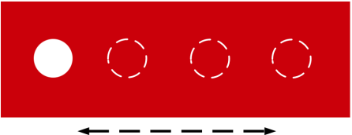
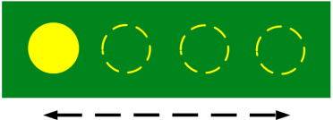
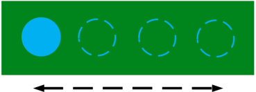
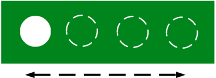

| Start time |
Expected observation |
| 00:00:04:05 |
A new series of four image subtitles appears: a red bar with transparent ball (video can be seen through the "hole")
moving from left to right, and then returning — repeating once.

Overall, the change in positioning is even, without skips in the sequence. |
| 00:00:05:20 |
A new series of four image subtitles appears: a green bar with yellow ball moving from left to right, and then returning
— repeating once.

Overall, the change in positioning is even, without skips in the sequence. |
| 00:00:06:17 |
A repeat of the series of four image subtitles appears: a green bar with blue ball moving from left to right, and then
returning — repeating once.

Overall, the change in positioning is even, without skips in the sequence. |
| 00:00:07:14 |
A new series of four image subtitles appears: a green bar with yellow ball moving from left to right, and then returning
— repeating once.

Overall, the change in positioning is even, without skips in the sequence. |
| 00:00:08:08 |
A repeat of the series of four image subtitles appears: a green bar with blue ball moving from left to right, and then
returning — repeating once.

Overall, the change in positioning is even, without skips in the sequence. |
| 00:00:09:02 |
A repeat of the series of four image subtitles appears: a green bar with transparent ball (video can be seen through the
"hole") moving from left to right, and then returning — repeating once.

Overall, the change in positioning is even, without skips in the sequence. |